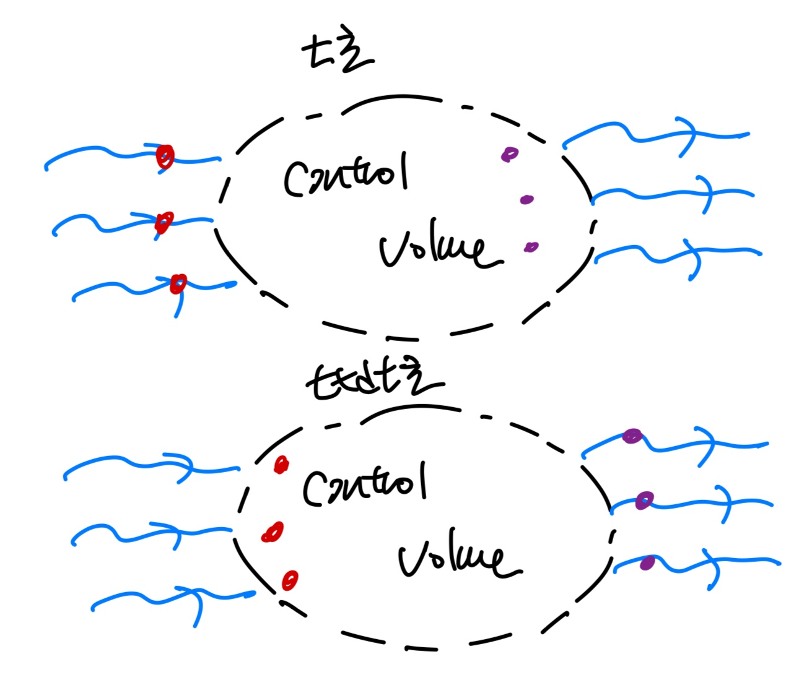
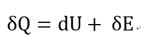
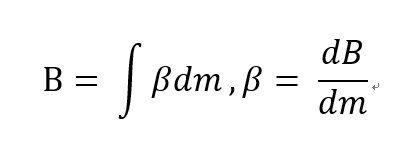
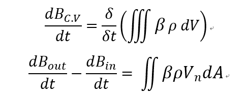
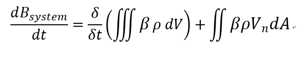

[Gas Dynamics] Ch 2 Control Volume Analysis - Reynolds Transport theorem
유체의 흐름을 분석하기 위해서는
1. Conserviation of mass
2. Conservatino of momentum -> Newton's second law of mtion
3. Conservation of Energy
위 3가지 Equation
을 정의해야만 한다.
정의하는 Control volume을 설정하고 흐르는 유동의 property들로 유도하는 방식으로 이루어진다. (Eulerian description)
Fixed Volume 을 임의로 설정하고 그 Volume을 흐르는 유체의 Property들이 어떻게 변화하는 지를 관찰 하는 것이다.
Fixed System vs Control volume
시작하기 앞서서 Fixed System과 control volume 차이를 알아야한다.
흐르는 유체를 분석할때 흐름 속에서 t초 일때 일정한 질량을 가진 system을 그림과 같이 정의하자.
이해를 쉽게 하기 위해
System = Vessel(배)
System 안에 있는 유체 = 선원
이라고 생각해보자
![[Gas Dynamics] Ch 2 Control Volume Analysis - Reynolds Transport theorem](./images/img-001.jpg)
유동이 오른쪽인 경우,
dt 초가 흐른 후, 즉 t+dt초 일때 그 배는 오른쪽으로 이동할 것이다.
그리고 안에있는 선원들도 같이 배를 따라서 이동하겠죠?
이 직관적인 관찰법이 바로 Lagrangian 관찰법이다.
즉 우리는 system을 떠다니는 배라고 생각하고 그 배의 움직임을 관찰하는 것이다.
반대로 Control Volume 은 시간이 흐름에도 불구하고
고정
되있고,
이를 지나가는 유체를 관찰 하는 것이다.

고정된 상자를 유체들이 흐른다고 생각해보자
시간이 흐르면 사진처럼 입구 밖에 있던
빨간색 입자들이 안쪽
으로,
상자안에있던 보라색 입자들은 밖
으로 나갈 것이다.
각각의 관찰법은 장단점이 있다.
먼저 System 의 장점은
이미 우리는 system을 이용한 분석방법들을 전부 안다는 것이다.
1. 배의 질량은 일정하기 때문에 시간이 변해도 질량은 변하지 않는다. (System Mass conservation)
2. 우리는 배에 작용하는 힘에 대해서 계산할 수 있다. Newton's second law로 질량 *가속도 라는 식으로 도출 가능
3. 뿐만아니라 다시 배에서 System으로 돌아와서 생각해보면 열역학 1법칙을 통해서,
시스템의 에너지 변화에 대한 식도 다음과 같이 도출 할 수 있다.

Reversly, Control volume의 장점은
흘러들어오고 나가는 유체의 유동을 계산 할 수 있다는 것이다.
(HOW? 곧 설명)
Reynolds Transport Theorem 은
아주 기발하게 이 두가지 방법의 each 장점을
합쳐 유동 흐름을 분석하였다.
합치는 방법으로
Reynolds 는
integral 방법
을 사용하였다.
먼저, 분석하고 싶은 유체의 성질을 (
B
)라고 정의하자
(B는 scalar function, vector function)이든 전부 가능하다.
그리고
β는
다음과 같이 정의한다.

t초
일때 Control volume와 System 이 같다고 설정하면
t+dt초
일때는 system만 오른쪽으로 이동할 것이다
(system을 유체를 따라 흐르는 배이기 때문)
![[Gas Dynamics] Ch 2 Control Volume Analysis - Reynolds Transport theorem](./images/img-005.jpg)
영역2 + 영역3 = [영역2 + 영역1] +[영역3 - 영역1]
이므로 B의 변화량(t에 따른)은 다음과
같이 정의할 수 있다
![[Gas Dynamics] Ch 2 Control Volume Analysis - Reynolds Transport theorem](./images/img-006.png)
여기서 [영역 2+3] 은 system이고, [영역 2+1] 은 control volume 이므로
![[Gas Dynamics] Ch 2 Control Volume Analysis - Reynolds Transport theorem](./images/img-007.png)
이후 Control volume내부 자체의 B변화량은 체적분형태로 표현 할 수 있고 나가고 들어온 B값은 발산량을
Surface Integral 형태로 다음과 같이 표현 할 수 있다.

위의 식들을 정리하면 최종적으로 Reynolds Transport Theorem 표현 식 이 도출된다.
